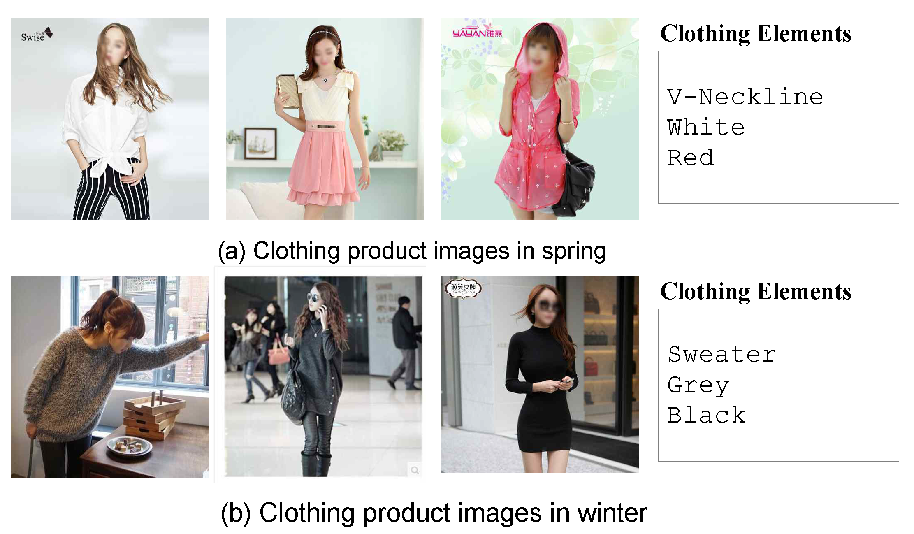
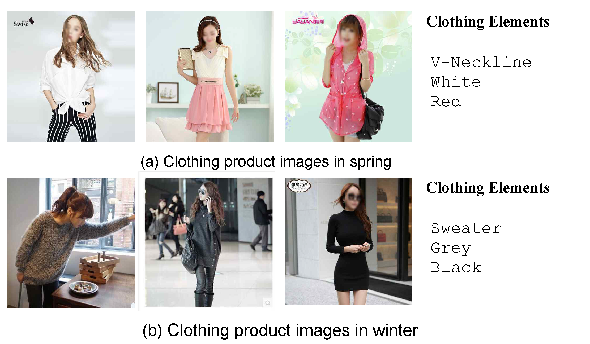
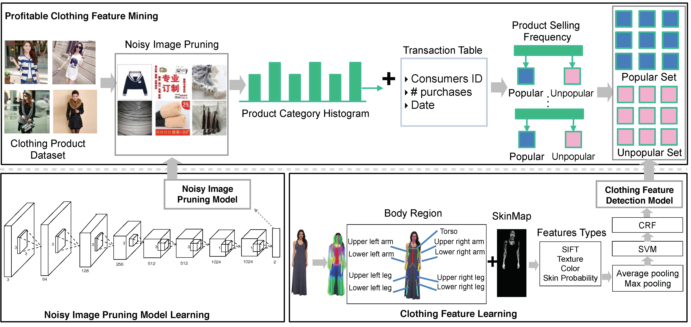

|
Fashion Social Media Mining and Analysis When Fashion Meets Big Data |
Objective
(1) Proposed a framework that facilitates the investigation of consumers' clothing preference in a fine-grained manner. [1]
(2) Discovered fashion trends in New York City by constructing a dataset from the New York Fashion Shows and New York street chic in order to understand likely clothing fashion trends. [2]
Papers
[1] "When Fashion Meets Big Data: Discriminative Mining of Best Selling Clothing Features," Kuan-Ting Chen, Jiebo Luo, World Wide Web (WWW) Conference, Perth, Australia, April 2017. [Paper]
[2] "Who are the Devils Wearing Prada in New York City?," Kuan-Ting Chen, Kezhen Chen, Peizhong Cong, Winston Hsu, Jiebo Luo, ACM Multimedia (MM), Brisbane, Australia, October 2015. [Paper]
Media News: New York Post Science News El Pais (Spanish) MIT Technology Review
Part I - New York Fashion Show [2] & Part II - Best Selling Clothing Features [1]
 

Abstract
With the prevalence of e-commence websites and the ease of online shopping, consumers are embracing huge amounts of various options in products. Undeniably, shopping is one of the most essential activities in our society and studying consumer's shopping behavior is important for the industry as well as sociology and psychology. Indisputable, one of the most popular e-commerce categories is clothing business. There arises the needs for analysis of popular and attractive clothing features which could further boost many emerging applications, such as clothing recommendation and advertising. In this work, we design a novel system that consists of three major components: 1) exploring and organizing a large-scale clothing dataset from a online shopping website, 2) pruning and extracting images of best-selling products in clothing item data and user transaction history, and 3) utilizing a machine learning based approach to discovering fine-grained clothing attributes as the representative and discriminative characteristics of popular clothing style elements. Through the experiments over a large-scale online clothing shopping dataset, we demonstrate the effectiveness of our proposed system, and obtain useful insights on clothing consumption trends and profitable clothing features.
System Framework
